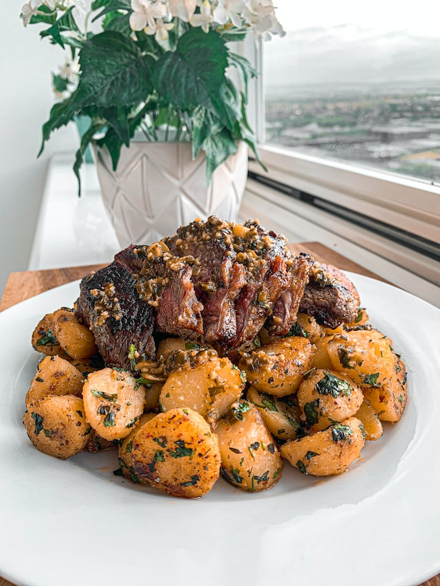
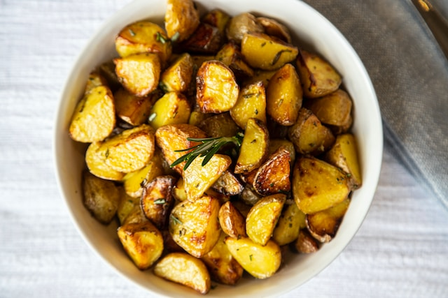

Home
hot roast potatoes

Description
Learn how long to bake potatoes at 450°F with this simple and delicious
recipe for rosemary-kissed roasted red potatoes.
Ingredients
- 2 pounds red potatoes, cut into quarters
- 2 tablespoons vegetable oil
- 1 teaspoon salt
- ½ teaspoon freshly ground black pepper
- ½ teaspoon dried rosemary, crushed
Steps/Directions
-
Preheat the oven to 450 degrees F (250 degrees C) and gather all
ingredients.
-
Place potatoes in a large roasting pan and toss with oil, salt, pepper,
and rosemary until evenly coated.
- Spread out potatoes in a single layer.
-
Bake, stirring occasionally, in the preheated oven until tender, about
20 minutes. Serve warm.
- Serve hot and enjoy!
